Conte illustré · Eden Yours
La Septième Chèvre de Monsieur Seguin et la Lumière
Un conte de François, en 35 images. Fais défiler ou touche « Suite » : les images suivent chaque phrase et apparaissent doucement. Tu peux lancer la chanson et lire en l’écoutant.
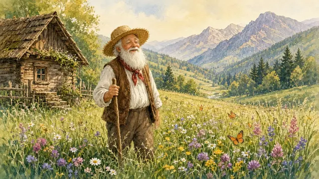
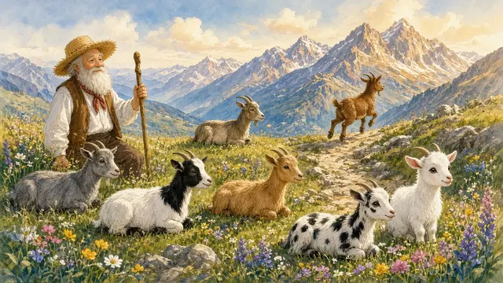
Il était une fois, dans un vallon fleuri où l’herbe sentait bon, un chevrier nommé Monsieur Seguin. Il avait sept chèvres, toutes plus belles les unes que les autres, mais chacune rêvait de liberté et s’enfuyait dans la montagne.
À chaque fois, hélas, un loup les trouvait, et les histoires finissaient mal.
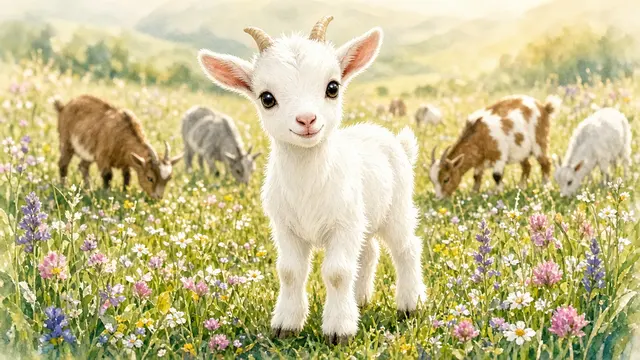
La septième chèvre, une petite biquette blanche aux yeux pétillants, était différente. Elle s’appelait Blanchette, et elle avait découvert un secret : elle pouvait se nourrir de lumière.
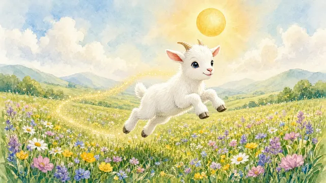
Chaque matin, elle grimpait sur un rocher, fermait les yeux, et laissait le soleil, le vent, et les étoiles invisibles la remplir d’une chaleur magique. Cette lumière lui donnait une énergie incroyable, et elle gambadait toute la journée sans jamais avoir faim.
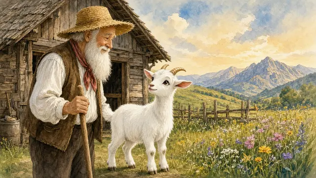
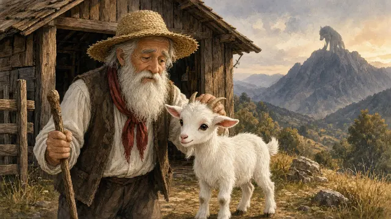
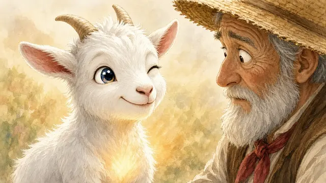
Un jour, Blanchette dit à Monsieur Seguin : « Laissez-moi aller dans la montagne, je veux voir les fleurs sauvages et danser sous le ciel ! » Monsieur Seguin, qui l’aimait beaucoup, soupira : « Ma pauvre Blanchette, le loup te mangera, comme les autres. » Mais Blanchette, avec un sourire malicieux, répondit : « Ne t’inquiète pas, j’ai ma lumière. »
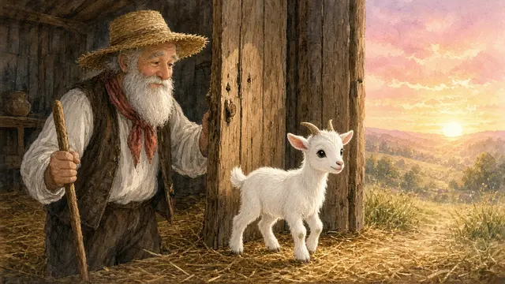
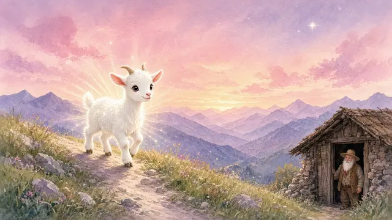
À l’aube, Monsieur Seguin ouvrit la porte de l’étable, et Blanchette partit, son pelage blanc brillant comme une étoile.
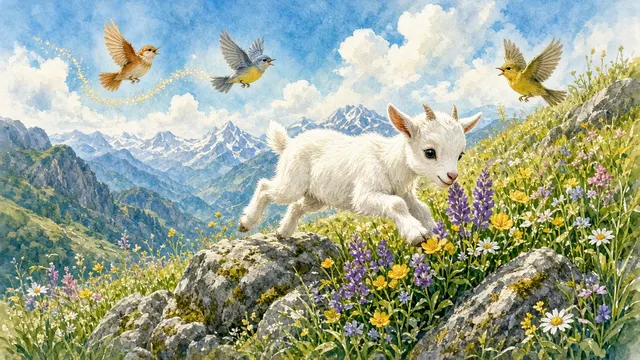
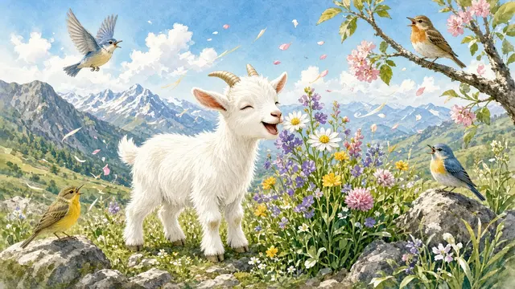
Dans la montagne, Blanchette s’amusa comme jamais. Elle sauta de rocher en rocher, renifla les fleurs, et chanta avec les oiseaux.
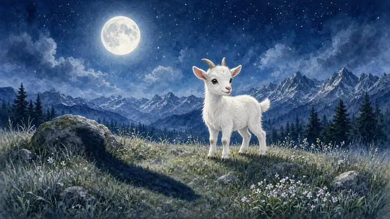
À la tombée de la nuit, alors que la lune brillait, elle sentit une ombre : le loup, avec ses yeux luisants et ses dents pointues.
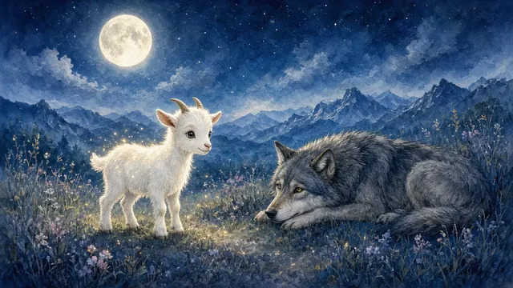
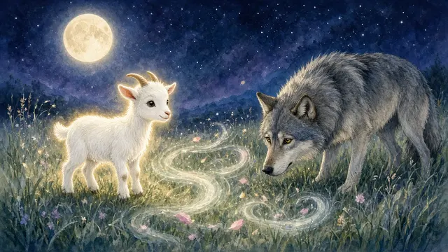
Mais Blanchette ne trembla pas. Elle le regarda droit dans les yeux, comme on regarde un vieil ami, et vit qu’il était fatigué, prisonnier de sa faim. « Loup », dit-elle, sa voix douce comme une brise, « tu crois que tu dois me manger pour vivre, mais viens, je vais te montrer un secret. »
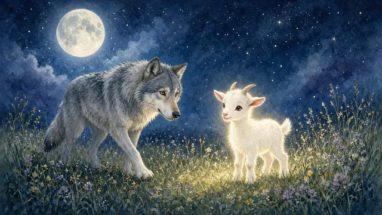
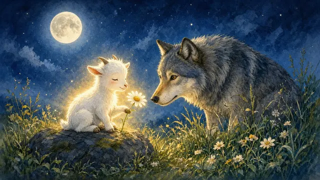
Le loup, intrigué par cette chèvre si lumineuse, s’approcha. Blanchette s’assit sur un rocher, tendit une pâquerette qu’elle avait cueillie, et ferma les yeux. Une lumière douce sembla rayonner autour d’elle, comme un feu de camp invisible.
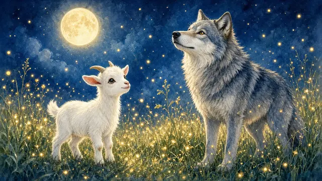
« Regarde, loup, la lumière est partout – dans la lune, dans l’herbe, dans l’air. Elle peut te nourrir sans que tu chasses. »
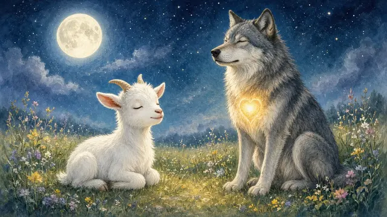
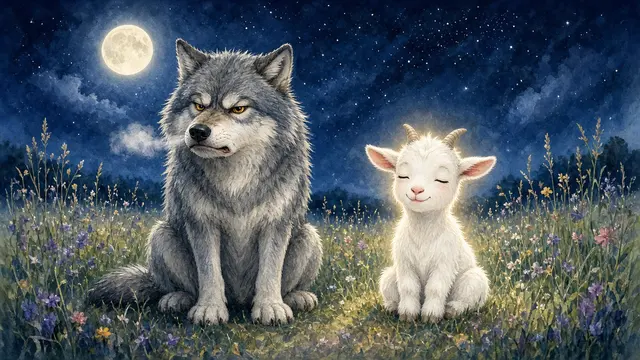
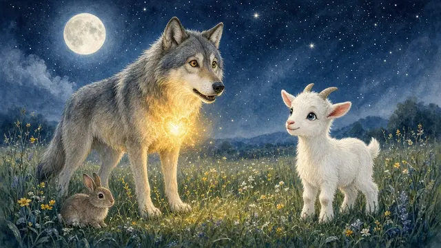
Elle lui montra comment respirer calmement, en imaginant une chaleur douce entrer dans son cœur. Le loup essaya, un peu grognon au début, mais bientôt, il sentit une énergie nouvelle, comme s’il n’avait plus besoin de courir après sa proie. « C’est vrai ? » murmura-t-il. « Je peux vivre sans manger ? »
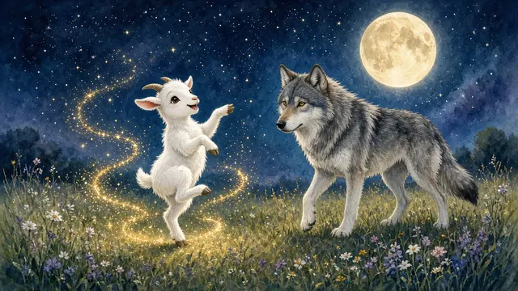
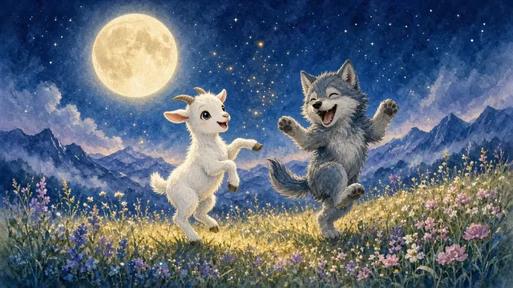
Blanchette hocha la tête : « Oui, loup ! La lumière te rend libre, et on peut jouer ensemble sous les étoiles ! » Elle sauta sur ses pattes et fit une pirouette, invitant le loup à danser. Le loup, d’abord hésitant, se mit à bondir avec elle, riant comme un chiot. Sous la lune, ils dansèrent toute la nuit, et le loup oublia sa faim pour toujours.
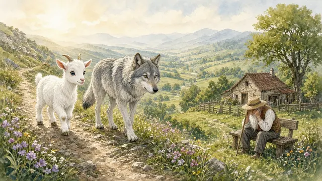
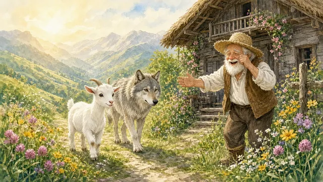
Le lendemain, Blanchette et le loup descendirent dans la vallée. Ils trouvèrent Monsieur Seguin, qui pleurait, pensant avoir perdu sa chèvre. « Monsieur Seguin ! » cria Blanchette. « Je suis là, et j’ai un nouvel ami ! »
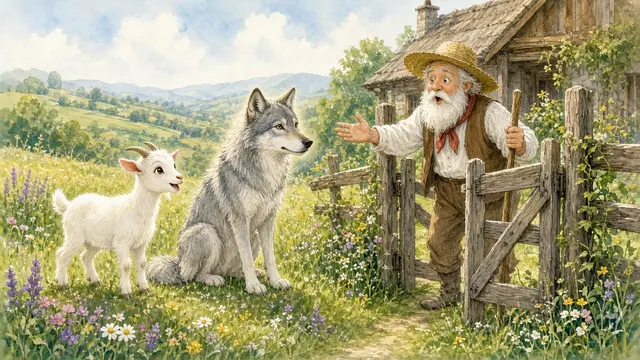
Elle raconta comment elle vivait de lumière et comment elle avait appris au loup à faire pareil. Monsieur Seguin, émerveillé, les invita dans son pré. Il apprit lui aussi à trouver la lumière – dans un rayon de soleil, un éclat de rire, ou une fleur.
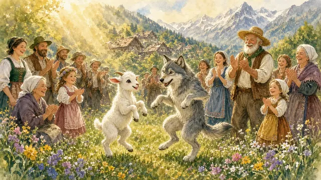
Bientôt, tout le village vint voir la chèvre et le loup danser ensemble, et chacun découvrit le secret de la lumière.
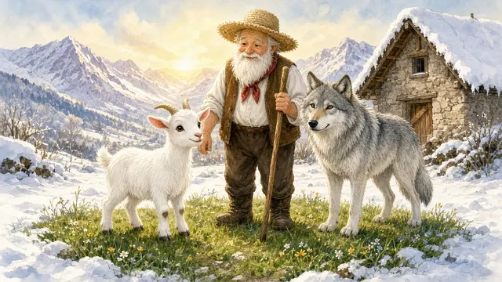
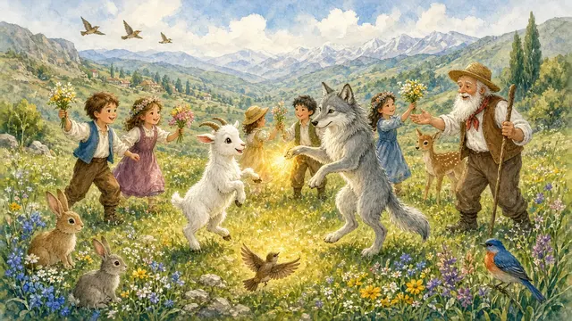
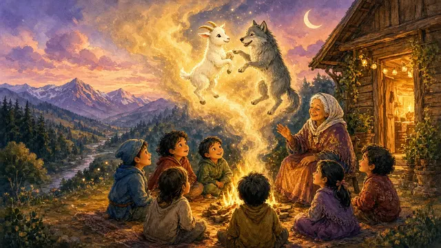
Blanchette, le loup, et Monsieur Seguin vécurent longtemps, bien au-delà de l’hiver, car la lumière les gardait forts et heureux. Ils chantaient, dansaient, et partageaient leur secret avec tous, montrant que personne n’avait besoin de prendre la vie pour vivre. Dans la vallée, on racontait encore leur histoire, celle d’une chèvre qui, avec un peu de lumière, avait changé le cœur d’un loup et rendu tout le monde éternellement joyeux.
Fin
Ce conte est aussi une chanson. Écoute-la en entier.
« Je suis autour. Je suis déjà dans le Vrai pur. »